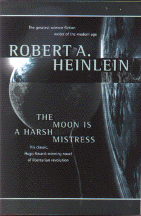

The Moon is a Harsh Mistressby Robert Heinlein
publisher: Tom Doherty Associates, Inc.
Fiction, 382 pages | 
(book cover art, Copyright ©1994 Tor Books)
Used with Permission. |
Return to the Book MenuPrevious|Next
Description:
"There Ain't No Such Thing As A Free Lunch," and nobody knows it better than the Loonies, human colonists on the Moon (Luna). But when the Authority of the Federated Nations on Earth treats the Loonies more as slaves than people as they grow food and ship it back to Earth, it is time for a little revolution....
Recommended for: Revolutionaries, rational anarchists, political scientists, anthropologists, and future Loonies!
Did-you-read questions:
Deadline: February 1, 2005.
These should be easy questions, but you should have the questions ready and keep an eye out during your reading. Each question should be answered with 1-2 sentences.
Note: these questions are not probably not the most important part of the book! Your essay will not have to cover these questions!
- Which three people are the B-level group that start the Lunar Revolution?
- What do Adam Selene and Simon Jester have in common?
- On what significant date did the Loonies declare themselves as an independent state?
- What is the code name for the Loonies' attack on Earth?
- What radio message does Manny send to respond to his summons back to L-City to rejoin Prof and Mike?
Report Questions:Deadline: Peer Review Session on February 8, 2005; paper due February 10, 2005.
You should write a 3 - 4 page essay on one of the following questions. Your essay should include examples and references to the book, unless otherwise specified. Page number references are sufficient for citing material from the primary book. If you use outside materials, cite your sources in full. If you would rather write on a different topic, you may, but clear it with Mr. Howe or Ms. Sullivan first.
- Manny certainly tries to convince the reader that he was coerced into pursuing revolution and becoming a major player in the new goverment that assembles on the Moon. Do you think this is really the case, or was Manny a more willing participant than he lets on?
- What do you think of the family structures on Luna? Do you think that they are a possible, stable family organization, or do these ideas just date this story? (Remember, this book was published in 1966...).
- The dynamic between Mike and Manny goes through many phases through this novel. Describe the progression of their relationship. Does this reflect the way that other relationships (in the novel or in real life) evolve realistically? Give examples.
- Professor de la Paz is very outspoken about his ideas about government. But although his touch is shown on the lunar flag, the beginning and ending of the novel would suggest that not all of his hopes were met. What do you think about his political views, and was the difference between his aspirations and what actually happened inevitable or the result of some error in his tactics?
Graphic and Presentation:
Deadline: February 21 - March 3, 2005.You will give a 10 minute presentation on both of the following:
- Convince your peers that they should (or should not) read this book. (This may include a brief summary of the book.) Give examples of what was cool or worthwhile in the book, and what you got out of it (or didn't).
- Describe a (realistic) science idea that you learned about in this book, citing information from at least 2 external sources (other than the dictionary). If you would like help choosing or understanding an idea from your book, you are invited to come talk to Mr. Howe or Ms. Sullivan.
Note: This presentation should not be just a reading of your paper!Along with this presentation, you should have a graphic that will go with it. A Power Point presentation is recommended, but if you have a special idea for a something else, such as a model, an original video presentation, or a well done drawing/ painting/ sculpture/ etc., you may do so, provided it involves a similar level of effort and polish. Speak to Mr. Howe or Ms. Sullivan first if you are considering an alternate graphic format to the Power Point.
Return to the Book MenuPrevious|Next